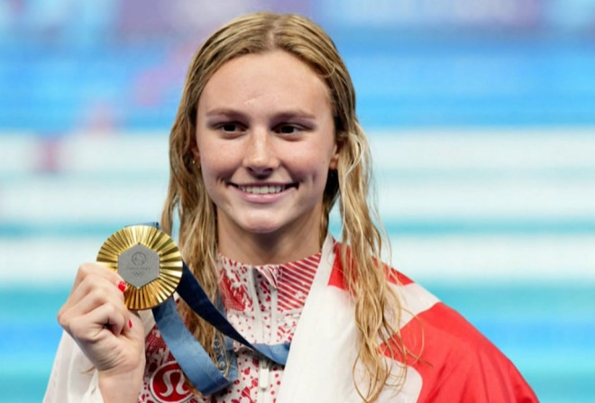
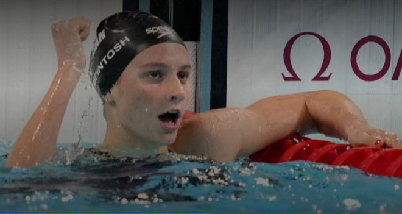
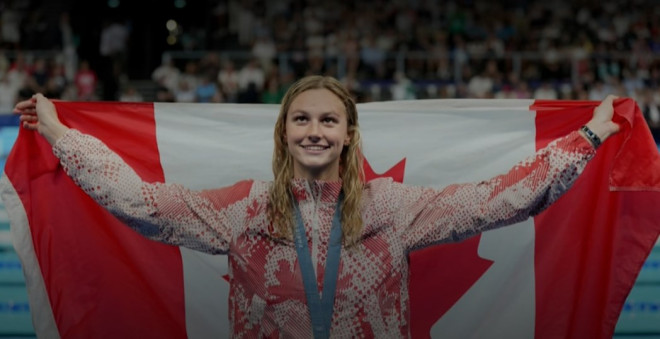

加拿大游泳明星萨默·麦金托什（Summer McIntosh）在2024年巴黎奥运会上取得了历史性成就后，已返回家乡多伦多。年仅17岁的她在奥运会上斩获三枚金牌和一枚银牌，成为加拿大奥运会历史上唯一一个获得三枚金牌的选手。


图源：CTV
她在周二下午晚些时候在多伦多皮尔逊国际机场下飞机后告诉记者：对我来说，比赛时的主要任务就是尽量保持简单，不去考虑比赛结束后的事情。现在，我会暂停一段时间，远离训练和比赛，享受这一刻，回味过去几周发生的一切。
在为期九天的比赛中，麦金托什带回了四枚奖牌，成为加拿大首位在单届奥运会上获得三枚金牌的运动员。
其中一枚金牌来自200米蝶泳比赛，而她的母亲吉尔·麦金托什（Jill McIntosh，原姓Horstead）曾在1984年洛杉矶奥运会上参加过这一项目的比赛。

图源：CTV
她说，我的妈妈在1984年奥运会上游过200米蝶泳，而我在2024年奥运会上获得了这一项目的金牌，这真的很酷。
这场胜利对吉尔有特殊的意义。她说：这对我们所有人来说都是一次难以置信的经历，我们对萨默的努力和成就感到无比自豪。作为父母，没有比这更让人骄傲的了。
麦金托什在400米混合泳和200米个人混合泳中赢得金牌，并以2分06.56秒的成绩打破了奥运会纪录。她还在400米自由泳中获得银牌，与队友Penny Oleksiak在里约奥运会上的四枚奖牌持平。
至于这位游泳天才接下来的计划，麦金托什表示，她将前往家中的度假小屋休息，但如果被邀请担任8月11日闭幕式的旗手，她会重返巴黎。
她说，那将会非常棒。